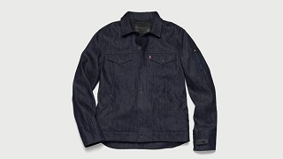
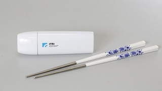
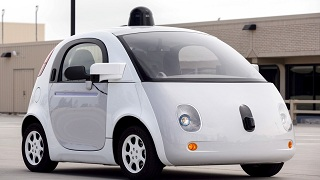
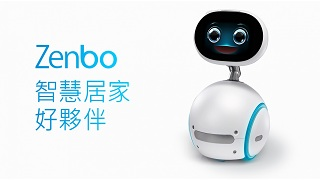
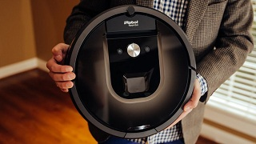

實際產品
Design by Ming、Kai
淺談物聯網
開發中的公司
實際產品
實例應用與技術
延伸閱讀
改變生活 ─ IoT產品
運用物聯網技術，目前已發展出許多跟日常生活有關的產品，藉此提升人們的生活品質
Levi's × Google ─ 智慧夾克

夾克能
自動感測
穿衣者在衣服上的觸摸動作，來開啟對應的手機功能，只須用手在袖口處輕敲、按壓，就能將導電衣接收到的訊號轉為指令，並透過藍牙連結手機，來完成接聽電話、查看訊息，及控制App等功能操作。
More Details
日本京瓷 ─ Daily Support
利用手機內建的
陀螺儀感測器
，來感測身體腹部的面積形狀，並以圖形來呈現受測者身體內臟脂肪的面積大小，再經由軟體推算出結果，來提醒量測者可能引發腦心血管疾病的風險指數。
More Details
工研院 ─ 筷潔菌

只要將衛生筷插入盒中就會釋放出
UVC LED光
，打造一個360度光照射的殺菌環境，經過90秒時間，號稱能消滅99.99%的大腸桿菌和其他病菌，即可達到立即消毒的效果，來提高民眾用筷的安全衛生。
More Details
Google ─ 無人汽車

Google自駕車靠著
機器學習、大數據分析
等技術，從來自
汽車感測器
的數據學習，讓汽車也能變得跟駕駛者一樣、甚至更聰明；讓汽車每0.1秒就能自行判斷，決定該變換駕駛路線，或是調整行駛的速度以完成駕駛。
More Details
Asus ─ 家庭機器人

Zenbo 能透過
聲控方式
交辦它來完成各種家庭任務，像是照顧老人或充當小孩保姆，又或者是化身主人的個人助理，提醒待辦事項，或是幫忙網購等，幫助家庭帶來更便利的生活體驗。
More Details
iRobot ─ 掃地機器人 Roomba 980

Roomba 980 具備有
自動導航
的功能，在掃地時會利用內建攝影機拍下目前所在位置環境，來
繪製專有的室內打掃地圖
，透過導航協助，將室內每一處角落都打掃乾淨，甚至可以找出室內最佳清掃路徑，讓打掃變成更有效率。
More Details
Design:CHEN,CHIA-MING | Images:
Google
(CC0)